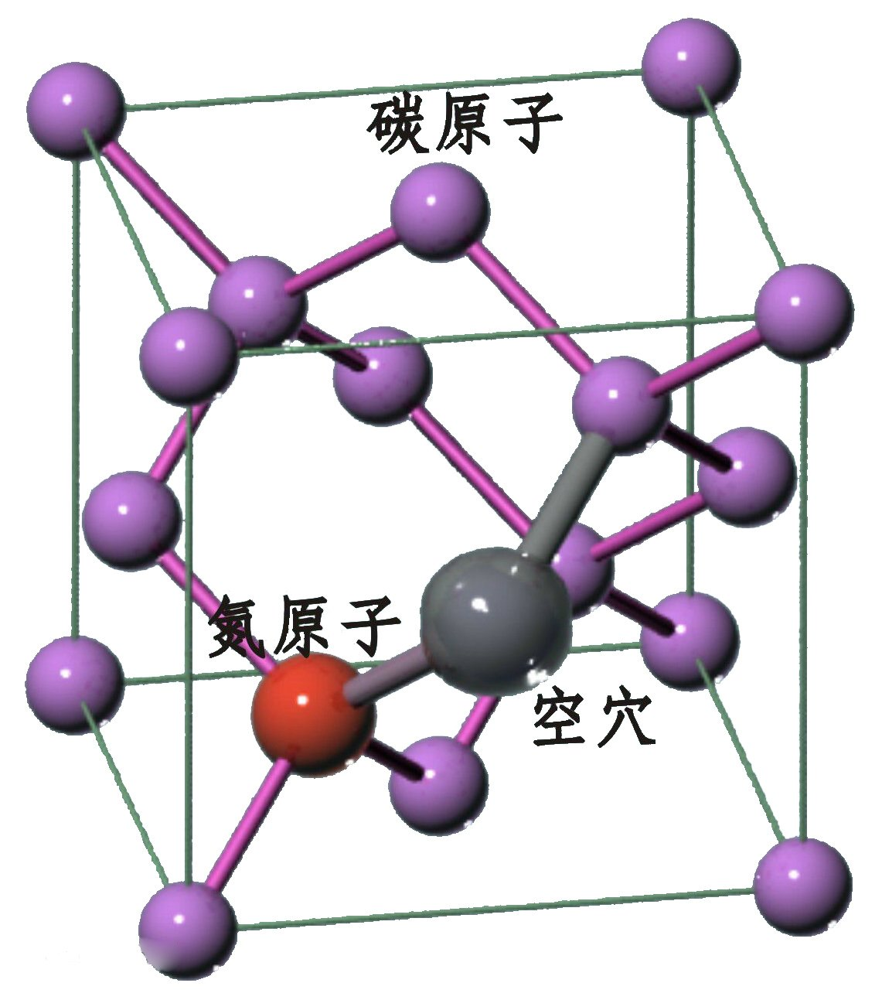

NV色心 [三人小组：宁宇鸿，柯王雨沁，张祥凝] |
简介 NV色心是金刚石中的一种发光点缺陷。一个氮原子取代金刚石中的碳原子，并且在临近位有一个空穴，这样的点缺陷被称为NV色心。 |
 |
应用 室温下，荧光纳米颗粒中的NV色心具有很好的光学稳定性，并且金刚石纳米颗粒本身无毒，具有有很高的生物相容性，表面经过化学处理后可以通过静电吸附或共价键相互作用与蛋白质、DNA酶等结合在一起，因此含NV色心的金刚石纳米颗粒可以用于生物标记，因此含NV色心的金刚石纳米颗粒可以用于生物标记、荧光成像等。NV色心电子自旋还可以实现光学极化和白旋态的读出，同时纳米颗粒本身尺寸很小，可以附着在原子力显微镜的针尖上，使得NV色心和样品的距离在纳米量级，进而可以实现纳米尺度范围内高分辨率的磁探测和磁成像。 |
NV色心在激光（如532nm）的泵浦下表现出较强的荧光，并在室温下可观测到其零声子线。由于NV的荧光非常稳定，是一种良好的单光子源，被用于量子密钥分配、生物荧光标记等实验。NV色心的自旋可通过激光和微波实现操作和探测。另外由于NV的电子自旋相干时间可达毫秒量级，它被认为是一种十分具有潜力的量子计算机系统。利用NV的量子寄存器、量子纠错等实验被验证。同时NV也可作为纳米尺寸的传感器，用于磁场、电场、温度等物理量的测量。国际上利用NV实现了5立方纳米的有机材料的核磁共振信号的测量，同时也实现了生物细胞内温度的测量。 |
|
前景 得益于金刚石的光学微纳加工工艺的日益完善，以金刚石为基础的集成光学在NV色心的帮助下也正快速的发展着。而以化学气相沉积制备的金刚石样品的品质越来越高，加之NV色心可通过离子束注入的灵活性，NV色心在将来必将得到越来越广泛的应用与关注。 |